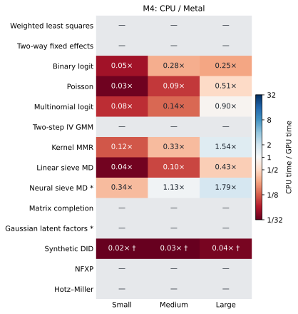
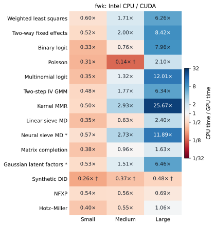

| Workload / dimensions | M4 CPU | M4 Metal | Intel CPU | RTX 5070 CUDA |
|---|---|---|---|---|
| Weighted least squares 1000 × 8 |
0.52 [0.51, 0.58] |
unsupported | 1.06 [1.05, 1.10] |
1.78 [1.76, 1.78] |
| Two-way fixed effects 2000 × 8 |
1.83 [1.76, 1.86] |
unsupported | 2.37 [2.37, 2.79] |
4.58 [4.53, 4.63] |
| Binary logit 1000 × 8 |
3.23 [3.19, 3.25] |
58.84 [57.96, 59.43] |
5.43 [5.42, 5.62] |
16.64 [16.02, 17.00] |
| Poisson 1000 × 8 |
1.93 [1.92, 1.99] |
55.98 [55.59, 56.06] |
5.23 [5.21, 5.25] |
16.87 [16.18, 16.87] |
| Multinomial logit 1000 × 6 × 4 |
21.58 [21.44, 21.69] |
277.11 [276.39, 277.63] |
31.60 [31.58, 31.68] |
89.03 [86.10, 90.73] |
| Two-step IV GMM 1000 × 6 × 10 |
3.92 [3.91, 4.20] |
unsupported | 10.45 [10.42, 10.46] |
21.62 [21.29, 21.87] |
| Kernel MMR 256 × 3 |
4.54 [4.40, 4.57] |
38.64 [37.15, 39.53] |
6.24 [6.20, 6.35] |
12.46 [12.15, 12.95] |
| Linear sieve MD 1000 × 6 |
2.02 [2.01, 2.12] |
57.28 [57.03, 59.21] |
5.42 [5.33, 5.43] |
15.40 [15.28, 15.59] |
| Neural sieve MD (fixed work) 1000 × 6 |
19.47 [19.40, 19.74] |
57.86 [57.49, 60.53] |
30.22 [30.09, 30.29] |
53.20 [52.31, 54.26] |
| Matrix completion 64 × 40 |
3.14 [3.04, 3.21] |
unsupported | 7.28 [7.24, 7.34] |
19.14 [19.06, 19.22] |
| Gaussian latent factors (fixed work) 64 × 40 |
28.14 [27.85, 28.39] |
unsupported | 58.45 [57.84, 59.55] |
109.71 [87.36, 110.68] |
| Synthetic DID 100 × 50 |
71.18 † [71.18, 71.42] |
3430.73 † [3418.93, 3437.52] |
130.03 † [129.43, 132.22] |
499.37 † [495.04, 503.25] |
| NFXP 2000 × 16 |
156.78 [156.09, 157.54] |
unsupported | 366.21 [365.98, 371.50] |
675.34 [673.85, 680.45] |
| Hotz–Miller 2000 × 16 |
9.79 [9.01, 9.81] |
unsupported | 19.51 [19.46, 19.73] |
48.99 [48.70, 49.54] |
CPU, Metal and CUDA performance
Matched estimation problems on an Apple M4 and NVIDIA RTX 5070
Trex’s tensor interface makes it possible to run many estimators on different devices, but does not guarantee acceleration. This study measures 14 workloads from 12 estimator classes, at three sizes each, using the same input files, precision and fitting settings on four backends. The Mac’s CPU and Metal GPU (mps) are distinct backends; the CUDA host’s CPU is included to separate within-machine acceleration from a comparison between computers.
These are measured fits, not extrapolated GPU timings. Each successful case has one discarded warm-up and three fresh timed fits. Numerical agreement is checked before presenting runtime ratios. Errors and iteration limits remain part of the results.
Main findings
CUDA pays off selectively as the problem grows; the M4 CPU is the best starting point for small fits in this suite. Every small workload is faster on its host CPU than on the tested GPU backend. At larger sizes the story depends strongly on the estimator.
- Dense conditional moments and larger regressions benefit from CUDA. At the largest size, kernel MMR takes 28.8 ms on CUDA, versus 739 ms on the Intel CPU and 267 ms on the M4 CPU: 25.7× within-host acceleration, or 9.3× relative to the Mac. Large multinomial logit gains 12.0× versus the Intel CPU; two-way FE gains 8.4×.
- Neural training benefits once the batches are large enough. The 50,000-row neural-sieve fit takes 54.5 ms on CUDA, 172 ms on Metal and 308 ms on the M4 CPU. This is the same 60-step training budget and agreeing predictions, not a comparison of times to a certified optimum.
- Metal is not a general substitute for CPU here. It completes 21 of 42 configurations natively. Large MMR and neural-sieve fits are 1.54× and 1.79× faster than the M4 CPU; the tested likelihood, linear-sieve and SDID fits are slower. The other 21 configurations require unsupported operations or float64.
- A GPU does not help every iterative estimator. The 128-state NFXP fit takes 263 ms on the M4 CPU and 805 ms on CUDA. SDID is also CPU-favored at these sizes, but every SDID run reaches its iteration cap, so its figures are timings of the same bounded computation—not times to convergence.
All 147 completed backend/problem combinations pass the predeclared agreement rule. This means computationally similar fitted outputs, not that all objectives have been optimized to arbitrary accuracy. The medium CUDA Poisson fit has a flagged score residual, and the neural fits intentionally stop after their fixed training budget.
Machines and software
| Apple system | CUDA system (fwk) |
|
|---|---|---|
| CPU | Apple M4, 10 cores | Intel Core i5-1240P, 12 cores / 16 threads |
| GPU | Integrated M4 GPU, 10 cores; Metal/MPS | NVIDIA GeForce RTX 5070, 12 GB |
| System memory | 16 GiB unified | 32 GB installed |
| OS | macOS 26.6.2, arm64 | Ubuntu Linux, x86-64 |
| Torch | 2.9.1 | 2.9.1+cu128 |
| Python | 3.12.11 | 3.12.12 |
| CUDA runtime / driver | — | 12.8 / 595.84 |
Both environments use NumPy 2.4.2, SciPy 1.17.0, pandas 2.3.3 and pytorch-minimize 0.0.2. Eight intra-op/BLAS threads and one Torch inter-op thread are requested on each host. Neither CPU affinity nor clock rates are locked. Apple Accelerate and Linux BLAS/CUDA libraries still differ; matching package versions does not make the machines identical.
The machine metadata includes exact Python, kernel, Torch-build and source information. Both runs used the same Trex implementation and benchmark runner hashes. The benchmark source is pinned independently of subsequent documentation edits.
Workloads and sizes
The shape definitions matter: “large” is relative to each algorithm, not a common amount of computation. A dense kernel has quadratic storage; a linear regression with few columns does not.
| Workload | Small | Medium | Large | Precision / fitting rule |
|---|---|---|---|---|
| Weighted least squares | 1,000 × 8 | 20,000 × 32 | 200,000 × 64 | float32; weighted solve + HC1 |
| Two-way fixed effects | 2,000 × 8 | 20,000 × 16 | 200,000 × 32 | float64; weighted absorption + HC1 |
| Binary logit | 1,000 × 8 | 20,000 × 32 | 200,000 × 64 | float32; LBFGS + model-based SE |
| Poisson | 1,000 × 8 | 20,000 × 32 | 200,000 × 64 | float32; LBFGS + model-based SE |
| Multinomial logit | 1,000 × 6 × 4 | 20,000 × 12 × 5 | 200,000 × 24 × 6 | float32; LBFGS + covariance |
| Two-step IV GMM | 1,000 × 6 × 10 | 20,000 × 12 × 18 | 200,000 × 24 × 32 | float64; Torch optimizer + sandwich SE |
| Kernel MMR | 256 × 3 | 1,024 × 3 | 4,096 × 3 | float32; dense RBF kernel, linear predictor |
| Linear sieve MD | 1,000 × 6 | 20,000 × 6 | 200,000 × 6 | float32; cubic instrument sieve, LBFGS |
| Neural sieve MD | 1,000 × 6 | 10,000 × 6 | 50,000 × 6 | float32; 64-unit network, 60 Adam steps |
| Matrix completion | 64 × 40 | 256 × 120 | 1,024 × 240 | float32; nuclear penalty, repeated SVD |
| Gaussian latent factors | 64 × 40 | 256 × 120 | 1,024 × 240 | float32; rank 3, 120 AdamW steps |
| Synthetic DID | 100 × 50 | 500 × 120 | 2,000 × 240 | float32; simplex Frank–Wolfe weights |
| NFXP | 2,000 / 16 | 10,000 / 48 | 50,000 / 128 | float64; observations / states, 2 actions |
| Hotz–Miller | 2,000 / 16 | 10,000 / 48 | 50,000 / 128 | float64; observations / states, 2 actions |
Regression dimensions are n\times p; multinomial logit adds J choices and GMM adds q instruments. Panel dimensions are units \times periods. MMR and both sieve estimators use three instruments. All intercept columns are explicit. The TWFE panel has 20 periods and n/20 units; its known absorbed rank is supplied, so the experiment measures fitting rather than a CPU rank-counting prepass.
Common data and solver settings
All inputs are generated once with NumPy seeds 8270, 8271 and 8272 for the three sizes, saved as arrays, and copied to the other host. Every worker checks the input SHA-256 manifest. This avoids different CPU/CUDA random-number streams changing the estimation problem.
- Regression errors are synthetic; WLS weights are positive lognormal functions of a covariate. The IV design adds a common shock to a regressor and its error. The conditional-moment examples similarly contain an endogenous regressor.
- Likelihood fits start at zero, with
maxiter=60, tol=1e-7. GMM uses two-step optimal weighting,maxiter=200, tol=1e-8. Linear MMR/sieve MD use LBFGS with 100 inner iterations, gradient tolerance1e-6and change tolerance1e-9. MMR’s RBF bandwidth is 1; the sieve has degree 3 and ridge1e-6. - Neural sieve MD uses copied initial weights, a 6–64–1 tanh network and 60 full-batch Adam steps at learning rate 0.01. This is fixed work, not a claim of optimization convergence.
- Matrix completion and latent factors use rank-three synthetic signals and approximately 80% observed cells. Matrix completion uses
lambda_fraction=0.1,maxiter=80,tol=1e-5. The latent model adds three covariates, penalty 0.001 and 120 AdamW steps at learning rate 0.02; its initialization includes a least-squares solve and SVD. Fitted predictions, not nonidentified factor signs, are compared. - SDID uses 90% control units, 75% pretreatment periods, a post-treatment shift of 1, and
maxiter=1000, min_decrease=1e-4. Its stopping test squaresmin_decrease; the numerical-diagnostics section identifies cap hits. - Dynamic choice uses the same two-action replacement model, known transitions, discount factor 0.9 and copied initial parameters. It fits simulated state/choice observations with
maxiter=40, tol=1e-7. This is not transition estimation or a long-panel dependence experiment.
End-to-end fit times
Times below are milliseconds: median [minimum, maximum] of three fits, after warm-up. Model construction, movement from host RAM, the public fit method, and copying fitted results back to CPU are included. Imports, disk I/O, data generation, SSH transfer, and post-fit quality diagnostics are excluded. Where the public fit computes standard errors, their cost is included. On narrow screens, scroll the tables horizontally to see all four backends.
† indicates a score diagnostic or iteration-cap warning; ‡ means the numerical agreement rule failed. The timing is still reported, but it is not presented as a speedup to an equivalent solution. Neural and latent-factor rows are fixed-work comparisons even when they agree closely.
| Workload / dimensions | M4 CPU | M4 Metal | Intel CPU | RTX 5070 CUDA |
|---|---|---|---|---|
| Weighted least squares 20000 × 32 |
7.87 [7.83, 8.02] |
unsupported | 6.65 [6.60, 6.80] |
3.89 [3.88, 3.89] |
| Two-way fixed effects 20000 × 16 |
15.55 [15.48, 15.67] |
unsupported | 13.22 [13.18, 14.54] |
6.62 [6.61, 7.04] |
| Binary logit 20000 × 32 |
20.25 [20.18, 20.29] |
71.97 [71.63, 80.76] |
72.25 [71.93, 126.92] |
95.62 [93.22, 98.32] |
| Poisson 20000 × 32 |
5.84 [5.66, 5.90] |
66.89 [66.08, 71.18] |
8.39 [8.06, 8.48] |
60.75 † [60.62, 60.81] |
| Multinomial logit 20000 × 12 × 5 |
59.94 [58.10, 60.27] |
433.67 [426.72, 442.39] |
101.74 [101.55, 103.39] |
77.16 [76.92, 85.24] |
| Two-step IV GMM 20000 × 12 × 18 |
19.16 [19.05, 19.17] |
unsupported | 44.05 [44.01, 44.84] |
24.86 [24.68, 26.36] |
| Kernel MMR 1024 × 3 |
16.92 [16.88, 17.69] |
51.16 [51.10, 51.19] |
40.90 [40.73, 40.94] |
13.97 [13.88, 14.13] |
| Linear sieve MD 20000 × 6 |
4.55 [4.34, 4.66] |
46.53 [46.19, 46.74] |
8.16 [8.07, 8.72] |
13.03 [12.13, 13.75] |
| Neural sieve MD (fixed work) 10000 × 6 |
70.03 [69.79, 70.24] |
62.14 [61.08, 63.23] |
145.27 [141.82, 146.03] |
53.13 [52.77, 53.53] |
| Matrix completion 256 × 120 |
14.18 [14.16, 14.27] |
unsupported | 25.44 [25.43, 25.44] |
26.39 [26.36, 26.54] |
| Gaussian latent factors (fixed work) 256 × 120 |
99.56 [99.34, 99.64] |
unsupported | 170.13 [169.45, 170.91] |
112.64 [112.24, 123.37] |
| Synthetic DID 500 × 120 |
96.53 † [96.23, 96.71] |
3433.54 † [3429.31, 3444.50] |
180.68 † [180.22, 182.06] |
494.00 † [493.88, 494.84] |
| NFXP 10000 × 48 |
218.50 [217.44, 219.51] |
unsupported | 413.24 [410.65, 413.39] |
739.81 [739.40, 744.98] |
| Hotz–Miller 10000 × 48 |
13.13 [13.07, 13.29] |
unsupported | 26.88 [26.84, 26.90] |
49.01 [48.53, 49.52] |
| Workload / dimensions | M4 CPU | M4 Metal | Intel CPU | RTX 5070 CUDA |
|---|---|---|---|---|
| Weighted least squares 200000 × 64 |
184.48 [184.08, 189.50] |
unsupported | 224.94 [214.43, 227.36] |
35.91 [35.82, 35.91] |
| Two-way fixed effects 200000 × 32 |
296.81 [291.78, 302.87] |
unsupported | 568.33 [564.32, 585.44] |
67.49 [67.47, 67.50] |
| Binary logit 200000 × 64 |
60.88 [60.87, 61.14] |
238.84 [238.25, 239.01] |
294.73 [286.91, 327.71] |
37.01 [36.96, 50.18] |
| Poisson 200000 × 64 |
49.63 [48.92, 49.76] |
97.67 [93.95, 98.80] |
102.09 [101.04, 102.60] |
48.61 [46.24, 50.37] |
| Multinomial logit 200000 × 24 × 6 |
253.56 [246.55, 282.56] |
282.51 [282.22, 286.79] |
711.78 [708.72, 716.36] |
59.25 [58.91, 61.11] |
| Two-step IV GMM 200000 × 24 × 32 |
348.59 [347.96, 353.16] |
unsupported | 1052.00 [1039.77, 1061.22] |
165.94 [164.94, 166.21] |
| Kernel MMR 4096 × 3 |
266.95 [266.57, 272.42] |
173.83 [170.18, 174.90] |
739.26 [730.62, 755.48] |
28.80 [28.67, 28.81] |
| Linear sieve MD 200000 × 6 |
27.23 [27.03, 27.31] |
63.36 [63.17, 64.19] |
38.81 [38.57, 38.88] |
16.20 [16.14, 16.60] |
| Neural sieve MD (fixed work) 50000 × 6 |
307.72 [307.13, 310.62] |
171.84 [171.08, 172.31] |
647.81 [646.55, 655.59] |
54.50 [53.16, 55.10] |
| Matrix completion 1024 × 240 |
76.80 [76.07, 77.42] |
unsupported | 72.84 [71.86, 75.78] |
44.63 [44.46, 44.81] |
| Gaussian latent factors (fixed work) 1024 × 240 |
455.03 [451.97, 456.28] |
unsupported | 814.80 [792.84, 864.59] |
126.16 [125.06, 129.76] |
| Synthetic DID 2000 × 240 |
129.35 † [126.48, 129.37] |
3516.95 † [3514.49, 3560.99] |
240.95 † [240.95, 243.84] |
501.46 † [500.40, 504.35] |
| NFXP 50000 × 128 |
262.86 [262.20, 263.39] |
unsupported | 559.09 [558.59, 567.69] |
805.19 [802.97, 814.91] |
| Hotz–Miller 50000 × 128 |
33.39 [32.94, 33.42] |
unsupported | 67.57 [67.14, 67.80] |
63.45 [62.36, 63.71] |
Within-machine acceleration
The ratio is CPU median time divided by GPU median time on the same host. A value above 1 favors the GPU; below 1 favors that machine’s CPU. An M4 CPU versus RTX 5070 ratio answers a different question because it also changes the host, memory system and software backend. Those cross-machine ratios are included separately in the downloadable CSV.


Numerical agreement and stopping
Speed is only useful if the same estimation problem is being solved. The agreement rule was committed before the repeated timing run. For each device, every measured repetition is compared with every Mac CPU repetition on that exact case. For a target vector v, define
e_v=\max_{r,s}\frac{\|v_{\mathrm{device},r}-v_{\mathrm{M4\ CPU},s}\|_\infty} {1+\|v_{\mathrm{M4\ CPU},s}\|_\infty}.
The bound is 10^{-3} for float32 and 10^{-5} for float64. Coefficients and standard errors are checked where available; prediction grids are checked for neural, latent-factor and matrix-completion fits; SDID compares the ATT rather than requiring unique donor weights. Losses, weighted residual RMSE, or both SDID weight objectives must additionally agree within 10^{-4} under the same scaling. The denominator’s 1 makes this an absolute-plus-relative criterion, not a percentage error when the reference is near zero.
| Backend | Fits completed | Agreement passes | Worst target error | Worst criterion error |
|---|---|---|---|---|
| M4 CPU | 42 / 42 | 42 / 42 | 1.60e-07 | 1.83e-09 |
| M4 Metal | 21 / 42 | 21 / 21 | 1.35e-04 | 1.75e-07 |
| Intel CPU | 42 / 42 | 42 / 42 | 4.00e-04 | 1.09e-07 |
| RTX 5070 CUDA | 42 / 42 | 42 / 42 | 2.04e-04 | 1.02e-06 |
Agreement is not an optimality certificate. The suite also records normalized score infinity-norms for likelihood, GMM and conditional-moment objectives, plus the iterations exposed by each public estimator. A score above 10^{-4} is flagged separately. Score scales differ across objectives, so this is a diagnostic threshold, not a universal statistical accuracy guarantee.
| Workload | Size | Backend | Diagnostic |
|---|---|---|---|
| Poisson | medium | RTX 5070 CUDA | score 1.89e-04 |
| Neural sieve MD | small | M4 CPU | fixed work; no convergence claim; score 6.99e-03 |
| Neural sieve MD | small | M4 Metal | fixed work; no convergence claim; score 6.99e-03 |
| Neural sieve MD | small | Intel CPU | fixed work; no convergence claim; score 6.99e-03 |
| Neural sieve MD | small | RTX 5070 CUDA | fixed work; no convergence claim; score 6.99e-03 |
| Neural sieve MD | medium | M4 CPU | fixed work; no convergence claim; score 8.39e-03 |
| Neural sieve MD | medium | M4 Metal | fixed work; no convergence claim; score 8.39e-03 |
| Neural sieve MD | medium | Intel CPU | fixed work; no convergence claim; score 8.39e-03 |
| Neural sieve MD | medium | RTX 5070 CUDA | fixed work; no convergence claim; score 8.39e-03 |
| Neural sieve MD | large | M4 CPU | fixed work; no convergence claim; score 1.17e-02 |
| Neural sieve MD | large | M4 Metal | fixed work; no convergence claim; score 1.17e-02 |
| Neural sieve MD | large | Intel CPU | fixed work; no convergence claim; score 1.17e-02 |
| Neural sieve MD | large | RTX 5070 CUDA | fixed work; no convergence claim; score 1.17e-02 |
| Synthetic DID | small | M4 CPU | iteration cap reached |
| Synthetic DID | small | M4 Metal | iteration cap reached |
| Synthetic DID | small | Intel CPU | iteration cap reached |
| Synthetic DID | small | RTX 5070 CUDA | iteration cap reached |
| Synthetic DID | medium | M4 CPU | iteration cap reached |
| Synthetic DID | medium | M4 Metal | iteration cap reached |
| Synthetic DID | medium | Intel CPU | iteration cap reached |
| Synthetic DID | medium | RTX 5070 CUDA | iteration cap reached |
| Synthetic DID | large | M4 CPU | iteration cap reached |
| Synthetic DID | large | M4 Metal | iteration cap reached |
| Synthetic DID | large | Intel CPU | iteration cap reached |
| Synthetic DID | large | RTX 5070 CUDA | iteration cap reached |
For linear MMR/sieve MD, the public interface does not expose the inner LBFGS iteration count; the recorded score is more informative than the length of its outer loss history. TWFE’s reported single solve does not count absorption passes. Dynamic-choice standard errors are not implemented and are not timed. Matrix completion’s relative-objective stop is not a primal–dual gap certificate.
Why a backend may not run
MPS CPU fallback is disabled. A result labeled Metal must not quietly execute its unsupported tensor operation on CPU and then be described as a native GPU benchmark.
| Workload | Sizes | Observed failure |
|---|---|---|
| Weighted least squares | large, medium, small | MPS SVD operation unavailable |
| Two-way fixed effects | large, medium, small | MPS has no float64 |
| Two-step IV GMM | large, medium, small | MPS has no float64 |
| Matrix completion | large, medium, small | MPS SVD operation unavailable |
| Gaussian latent factors | large, medium, small | MPS least-squares operation unavailable |
| NFXP | large, medium, small | MPS has no float64 |
| Hotz–Miller | large, medium, small | MPS has no float64 |
Float64 is unavailable in MPS; Trex’s FE absorption, Torch GMM and these dynamic choice implementations use it. Even float32 is not sufficient for every path: WLS validates matrix rank via SVD, matrix completion uses SVD directly, and the latent-factor initializer calls least squares. Support here refers specifically to Torch 2.9.1 and these estimator paths, not to every future Metal release. The benchmark does not patch a solver or silently move an operation to CPU.
Measurement boundaries and interpretation
Each case runs in a separate process, with both backends on a host measured serially. CUDA/MPS are synchronized at timing boundaries. The warm-up executes the same full fit and initializes kernels/libraries before the three timed repetitions. Every repetition constructs a fresh estimator; a previously fitted model is never reused. The case timeout is 240 seconds for imports, warm-up, all repetitions and diagnostics together, not a per-fit time limit.
There is no automatic mixed precision, TF32, torch.compile, or backend-specific solver tuning. Host-to-device input conversion and result transfers are timed; kernel-only and permanently GPU-resident workflows can have different tradeoffs. The download also reports fit-only and preparation times. “Fit-only” still includes conversions, validation or host work performed inside a public fit. For example, GMM is not a claim of fully GPU-resident inference simply because its optimization backend is Torch/CUDA.
The results explain workload behavior, not peak hardware throughput:
- Tiny problems often finish on CPU before GPU dispatch and synchronization overhead can be amortized. Repeated Python control flow and scalar stopping checks can be especially expensive on a GPU.
- Larger matrix products and batched neural computations can amortize those costs. Dense-kernel MMR also changes both arithmetic and memory demand as n^2, unlike a fixed-width linear regression.
- Iterative solvers can take different numbers of steps at different sizes. A nonmonotone timing curve is not, by itself, a benchmark error. Consult the recorded iteration counts, scores and raw ranges rather than fitting a throughput curve to three points.
- These are modest research-scale problems on one M4 and one consumer CUDA GPU, with one DGP draw per size. They do not establish the fastest solver, best thread count, energy efficiency, peak-memory frontier, or performance on A100/H100-class hardware. GAN/diffusion training, language models, GEL’s SciPy path and the full space of Trex options are outside this suite.
Download and reproduce
- All raw warm-up and measured repetitions: compressed JSON with timings, fitted outputs, diagnostics and failures.
- Summary CSV: all 168 backend/case combinations, medians/ranges, same-host and Mac-CPU ratios, agreement errors and flags.
- Input manifest, environment metadata, and download checksums.
- Benchmark runner, measurement contract, and analysis code.
Install the pinned source and matching numerical-library versions in an appropriate environment on each host. Generate the data once and copy the whole directory; regenerating independently is not the matching procedure.
python benchmarks/devices.py generate --data tmp/device-bench/data
# Mac, after copying the exact generated directory:
python benchmarks/devices.py run --host mac --devices cpu,mps \
--data tmp/device-bench/data --output tmp/device-bench/mac-results
# CUDA host, using those same input files:
python benchmarks/devices.py run --host fwk --devices cpu,cuda \
--data tmp/device-bench/data --output tmp/device-bench/fwk-resultsCollect the two result directories onto one machine and run benchmarks/summarize_devices.py as described in the benchmark README. The documentation build validates and analyzes saved measurements; GitHub’s CPU-only runner does not rerun or manufacture the hardware experiment. New hardware results should receive a new dated archive, preserving the source and environment associated with this snapshot.